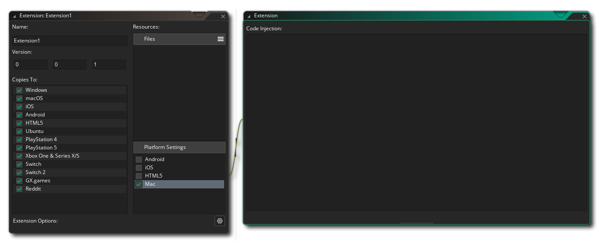

You can inject entitlements into your game's Xcode project through extensions. This is done by clicking on "Mac" under "Platform Settings" in an extension's editor:

In the "Code Injection" field, add options and entitlements for the generated Xcode project as part of the following tags:
| Tag | Description |
|---|---|
| YYMacXcodeBuildSettings | Used to set options such as ENABLE_HARDENED_RUNTIME |
| YYMacEntitlements | Used to enable entitlements |
Under the build settings, currently you can only set ENABLE_HARDENED_RUNTIME. The list of entitlements to enable for Hardened Runtime are available in the Apple Developer Documentation.
The following is an example of code injection added to enable Hardened Runtime with three entitlements:
<YYMacXcodeBuildSettings>
ENABLE_HARDENED_RUNTIME = YES;
</YYMacXcodeBuildSettings>
<YYMacEntitlements>
<key>com.apple.security.cs.allow-jit</key><true/>
<key>com.apple.security.cs.disable-library-validation</key><true/>
<key>com.apple.security.cs.allow-unsigned-executable-memory</key><true/>
</YYMacEntitlements>